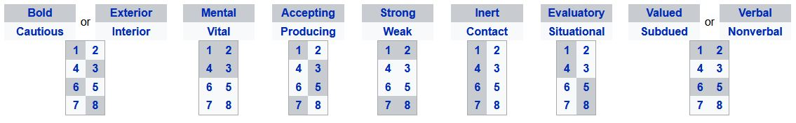
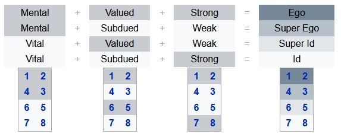
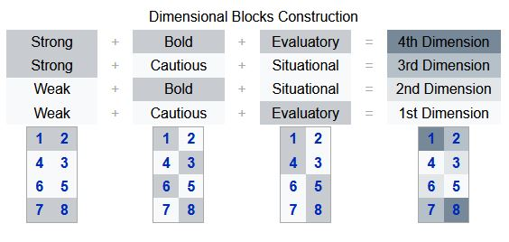
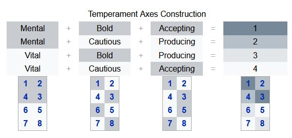
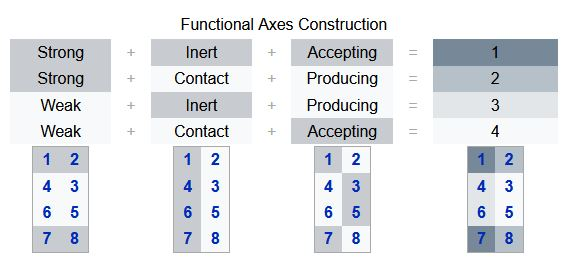
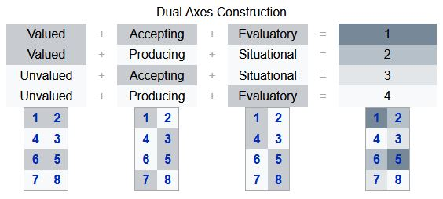
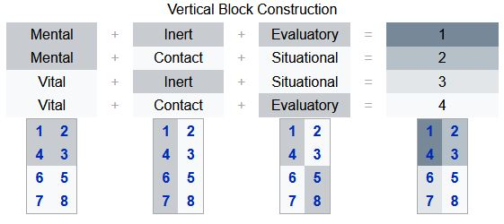
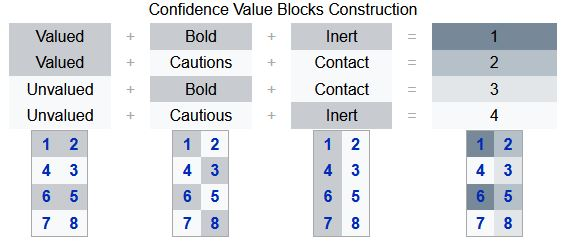
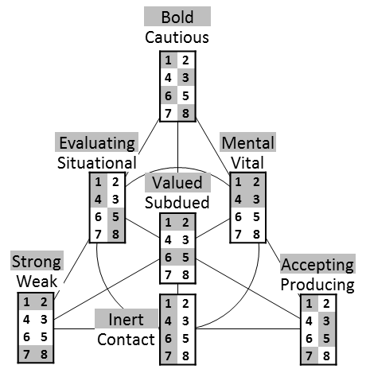

Function dichotomies¶
Warning
This page or section is incomplete. Additional contributions are needed.
Functions can be categorized according to seven dichotomies. These seven dichotomies are related in the same way the Jungian foundation is related to the Reinin dichotomies, and are thus subject to the same criticism as Reinin dichotomies. Since the seven dichotomies start as mathematical groups, they can be defined with multiple compatible definitions, depending on the author and scope. Recently, Victor Gulenko has developed the Energy Model, sometimes called Model G, in which he redefines all seven function dichotomies to focus on the flow of information within the psyche.
Function dichotomies not only clearly contrast functions in Model A, but also serve as the information metabolism basis for most of type dichotomies, including the Jungian foundation and the quadra values.
Model A function dichotomies:
Model A Function Dichotomies¶
Mental and Vital¶
Perhaps the most important function dichotomy is mental/vital, sometimes called conscious/unconscious. The functions in the mental ring (functions 1, 2, 3, and 4) strive to verbalize information and formulate observations and form the core of the individual’s intellectual activity. On the other hand, the functions in the vital ring (functions 5, 6, 7, and 8) tend to manifest themselves without words in the process of doing things or inadvertently in the form of spontaneous sentiments. The mental and vital rings are briefly covered in Model A.
Accepting and Producing¶
Accepting/producing is a dichotomy that separates the two functions of each block of Model A. Accepting functions ‘come first’ in each block and are odd-numbered: 1, 3, 5, and 7. Producing functions ‘come second’ and are even-numbered: 2, 4, 6, and 8. Note that accepting functions are on the left in the Ego and Id, but on the right in the Super-ego and Super-id.
Originally, Aushra Augusta suggested that accepting functions focus on obtaining a picture of reality, and producing functions create some sort of ‘new’ product that is molded to that cross-cut of reality obtained by the accepting function.
Strong and Weak¶
See also
The Ego and Id functions are called strong, and the Super-ego and Super-id functions weak.
Strong functions generally have a more sophisticated grasp on information, and can be used practically for the benefit of oneself and others.
Weak functions, in contrast, tend to oversimplify data, do not usually generate conclusions on their own, and depend on help from outside sources.
The extroverted and introverted variants of an information element (e.g. extroverted intuition  and introverted intuition
and introverted intuition  ) are different perspectives on the same sphere of activity, so it makes sense that strength in one implies strength in the other. For example, strength in accumulating data (
) are different perspectives on the same sphere of activity, so it makes sense that strength in one implies strength in the other. For example, strength in accumulating data ( ) implies strength in inferring structure based on that data (
) implies strength in inferring structure based on that data ( ).
).
Contact and Inert¶
Inert functions (1, 4, 6, 7) are those that do not integrate information from the environment; thus, the strength of these functions remain the way they are. A person does not seek guidance in these areas as they comprise the core of their natural strengths and weaknesses.
Inert functions 1 and 4 are a part of the mental ring; these are essentially one’s most confident strengths (base function) and debilitating weaknesses (point of least resistance). It is for this reason that strong judgments about these aspects of reality are inadvertently made.
Inert functions 6 and 7 are in the vital ring of a person’s psyche. An individual is hardly aware of how these functions are used. The mobilizing function is inert since its primary mechanism is to mobilize one’s creative function into action. Thus one’s ability to use it does not become much stronger throughout life. The ignoring function is inert because it is part of a person’s natural strength, just like the base function. Conscious information is limited here in favor of the leading function.
Contact functions (2, 3, 5, 8) are essentially how we touch upon the environment; they adapt and integrate new experiences from the environment. These are capable of being improved over time (through ability or simply new understandings).
Contact functions 2 and 3 are in the mental ring. The creative function produces new information out of what is accepted by the base function. This is literally how we uniquely ‘make contact’ with the world. This has potential to grow stronger as a conscious element since it’s the Ego’s connection to reality. In the role function, however, information from the environment is weakly accepted situationally, and is subdued since it opposes the base function’s approach. Although it cannot truly grow in strength, where it does grow is within the individual’s subjective understanding of that aspect of reality.
Contact functions 5 and 8 are in the vital ring and strive to unconsciously make contact with the environment. This is indefinitely true of the suggestive function. Since it complements the base function, people unknowingly seek information related to it from the environment to strengthen its ability. It is theoretically the only way one can improve on their leading function. The demonstrative function makes contact with one’s environment very unconsciously; it acts with the conscious leading function to produce one’s unique worldview, being just as strong as the base function.
Valued and Subdued¶
See also
Valued functions are essentially what make up the foundation of our socionic type (Ego functions 1 and 2), and the processes that complement that foundation (Super-id functions 5 and 6). Every person actively seeks to process information based on these functions, and warmly create a sense of connection to others who value similar functions. The more valued functions in common means the closer the general compatibility between two types. These functions are what make up the quadra values of the types.
Subdued functions are the remaining four functions that oppose our preferences; as a result we try to limit the use of these functions. The mental-subdued (weak) functions are found in the Super-ego block (functions 3 and 4), and the vital-subdued (strong) functions are in the Id block (functions 7 and 8). Since these functions are what we suppress as much as we can, in situations where we must use them they tend to produce dissatisfaction and distress in ourselves. Subdued functions are sometimes called non-valued although some socionists prefer not to use this name.
Evaluatory and Situational¶
Evaluatory functions are the strongest (1 and 8) and weakest (4 and 5) functions of a person’s psyche; strong judgments about areas that involve these functions are made.
Accepting-evaluatory functions, specifically the leading and suggestive, are valued by the individual. Evaluations made here are taken seriously, as they compose the center of one’s personality. In the leading function lies the core of their evaluations and decisions and so remains firmly inert; information accepted in the complementary suggestive function is also evaluated by an individual, but being weak and still yet valued, it strives to make contact with the environment to develop.
Producing-evaluatory functions are subdued by the individual; evaluations are produced here only when information cannot be processed by valued accepting functions and are instead processed by our subdued accepting functions. Since the information produced in these areas are subdued, evaluations are generally negative but nonetheless firm. This is especially true of the vulnerable function. As for the demonstrative function, evaluations are produced in favor of one’s creative function, so it is taken less seriously even though an individual is quite sophisticated in that area.
Situational functions are accessed on a case-by-case basis, so decisions and judgments made in these areas are more or less inclined to remain constant.
Accepting-situational functions (3 and 7) are subdued and only accept information in cases where the data accepted cannot be confidently evaluated by one’s valued accepting functions. In the role function, information is accepted consciously but is subdued as it opposes the base function. It’s also a contact function, which is why it is seen as somewhat of an importance to an individual, but definitely not emphasized. In the ignoring function, information is accepted even moreso on a situational basis because a person is strong in this area but neglects it over their preferred strength in the base function. Information is mostly ignored here and instead accepted by one’s suggestive function.
Producing-situational functions (2 and 6) are situational since they only produce information that has been accepted by our valued-evaluatory functions. One’s creative function produces strong and valued information that must make contact with the environment for their ego to be heard. However, new information is only produced in situations the base function can accept information. One’s mobilizing function is inert, weak and valued, so information produced here isn’t quite understood consciously but still acts as a driver for the creative function.
Understanding this function dichotomy is integral in fully realizing how types metabolize information as it forms the “information pathway” that connects our Model A together.
Bold and Cautious¶
Bold functions are used more freely than cautious functions, sometimes even in a way that makes a subdued function more heavily used than a valued function (e.g. role and suggestive functions). This may be considered an aspect of function strength.
For extroverts, all extroverted elements are Bold functions, and all introverted elements Cautious. Conversely, introverts have Bold introverted functions and Cautious extroverted functions. The reason for this is that a type is more comfortable with their preferred direction of energy (“-tim”), and even the weak-bold functions are used with a considerable amount of confidence (whether it is just to put on a show or is naively used). In contrast, one’s Cautious functions are used with great care - the creative function is more sensitive to criticism even though it is a strong function, for example. This especially applies to the vulnerable function, where one is especially cautious about its use.
Verbal and Nonverbal¶
Verbal (discursive) functions (or overvalued) belong to Ego and Super-Id blocks. These are functions (1, 2, 5, 6). They provide the active exchange of information between people. Information on these functions is interesting, and easily discussed. They tend to self-development.
Non-verbal (working, cooperative) functions belong to Super-ego and Id blocks. These are functions (3, 4, 7, 8). Aspects of these functions are not negotiable, prefer to receive help through action, deeds. Activity is limited to immediate needs and demands of society.
Exterior and Interior¶
Exterior (constant) - Functions 1, 3, 6, 8. These are accepting functions of the mental ring and producing functions of the vital ring. Functions that contain aspects of one color - black for extroverts and white for introverts. It is characteristic for them to consider certain aspects to be part of an invariable essence of the world, and strive to leave them in the form in which they are. External changes are perceived as something inevitable but not characteristic.
Interior (variable) - Functions 2, 4, 5, 7. These are producing functions of the mental ring and accepting functions of the vital ring. These functions tend to see in their aspects elements that should be changed in the first place. They are either actively influencing the world or passively expecting changes from it.
Blocks¶
Blocks are pairs of functions that share certain properties.
Any two function dichotomies can intersect to create four blocks in the same way two type dichotomies can intersect and create four small groups. By far, the most common and widely used blocks are Augusta’s Ego, Super-Ego, Id and Super-Id, but the theory of dimensional functions is also relatively popular.
Augusta’s Blocks¶
Ego Block¶
The Ego block is a socially demonstrative, creative block that forms the core of the TIM and is usually associated with an individual’s ego - their inner “I”. This is an area of conscious competence and individualism, as well as conscious and active observation and influence on the world. A person is usually the most confident, informed, and energetically active on their Ego block functions. On this block, we rarely experience feelings of remorse, doubt, and shame; neither does this block shift responsibilities or blame onto others.
The Ego block comprises a point of accurate self-assessment and demands social recognition that is adequate to its abilities. The activities of the functions of this block are socially direced - people easily share their experience and lend help to others from their Ego block. The functions in this block rarely “get tired”, thus a person can fill in most of their free time by activities pertaining to the functions of this block. Often people pick their primary sphere of activity and occupation basing on the functions of the Ego block.
The Ego block is believed to be fully formed by the time a person reaches 24-25 years of age. Some socionists have noticed that this observation coincides with C. G. Jung’s commentary: “The first half of [a person’s] life is devoted to forming a healthy ego, the second half is going inward and letting go of it.”
Note
It should be noted that while this is the strongest block of a TIM, the accuracy and correctness of its estimates is strongly influenced by a person’s level of experience, knowledge, and intelligence. It is quite possible for the Ego block functions to make mistakes. Still, a person rarely feels deeply ashamed or inadequate on this block even if they’ve blundered, and usually recovers quickly and with ease.
The two functions of the Ego Block, the leading function and the creative one, are said to constitute the “formula of the type”. These are the most independent and confident functions. Activity of this block always carries an unfinished, open-ended nature. On this block a person says: “I know what I need the best. If some changes or improvements are needed, I will implement them without outside help.”
Super-ego Block¶
This block is known as the block of “social control” and the block of “social conformism”. It can be likened to the “social conscience” of an individual: this block’s activity is directed primarily at fulfillment of norms and standards that other people set for the individual. Any evaluations and instructions on this block the individual seeks external to himself, from other people who surround him or her; here the individual “surrenders” himself to the direction and control of others from his social milieu, consciously admitting the weakness of own Super-ego functions. The absence of “painful irritation” on 4th vulnerable function is considered to be a sign that the individual satisfies and meets the expectations of others; each person wishes that his or her understanding of the 4th vulnerable aspect would coincide with the “public opinion”. According to interpretations of some socionics sources, this is the block through which a society controls a person.
Direct influences on Super-ego block are typically the most consciously discomforting to a person. At the same time, the person is consciously aware of his or her weaknesses in this area, and realizes that he or she must make up and react somehow. This reaction, as a rule, comes from the strong functions of their Ego block. Thus, influences on the Super-ego block make a person mobilize and consciously activate the functions of his or her Ego block for a further response.
The Super-ego block never argues; it only reasons not adding anything new but only tallying up all that is known to the individual on its aspects. This block is “omnivorous” and readily absorbs all information that pertains to its aspects, at the same time showing a subpar differentiation of information.
In some literature this block is referred to as the “teenager” block - from this block the person tries to show to others: “I’m just like you. I am one of your own.” - which is reminiscent of socialization style of people in their teenage years, when a person tries to show their belonging to a particular peer group. It is also believed that this block fully forms during adolescent years (12-18).
Super-id Block¶
The Super-id block is sometimes called the “child” block in socionics literature, because this is the block of weak unconscious functions on which it is difficult to engage in active, conscious, purposeful activity. A person most often is a “consumer” of information on this block, readily absorbing any related information from others, and even provoking others to produce such information, which is best accomplished by their dual TIM. At the same time, a person poorly discerns information on this block, and tends to be overly trusting of the arguments and evaluations provided by others. This is especially descriptive of the suggestive function, which has been called “suggestive” because a person is too suggestible, malleable, and easily directed on this element, having weak ability to evaluate incoming information on this function.
In general, people need extensive advice and support on the aspects of their Super-id bock, which they typically receive from others who have these information aspects as part of their Ego block. To think for oneself and resolve problems independently on this block the person “hasn’t the time” and little understanding of own wishes and needs; thus a person usually gives a lot of freedom to others, including their partner, over these aspects.
Having little awareness of one’s own needs on this block, the person does not pose their own interests on this block in opposition to others; certain victimness and sacrificial behavior can be observed on this block, as well as a need for external regulation and control. If a person does not receive support and high quality positive advice on these aspects, and experiences inadequacy on own suggestive and activating functions, a feeling of “blaming others” begins to develop over this block. In this case, a person start accusing people around for not living up to his expectations, withdrawing from society, and placing all responsibility on others. (As an example: An elderly lonely ILE man was no longer able to sufficiently take care of his living quarters, where he also kept a monkey as a pet and company. As the items and trash accumulated in his flat, and he started receiving complaints from other residents of the complex, he blamed them and his neighbors for not helping him out with upkeep and maintenance of his apartment.)
Id Block¶
Passive skills - a person is quite capable on this block, but these skills are directed at prevention of negative moments and dangerous developments rather that active and conscious self-realization. The person has little awareness of what he is capable of on this block and little interest in it. The main function of this block is watching out for potential dangers and pitfalls, satisfaction of one’s base level of needs, and ensuring one’s own survival and survival of close people. Other types of activities on this block are usually of no interest to a person and don’t bring results of high social value and merit. A person is typically unable to constantly work on the aspects of this block, since this requires placing restrictions on one’s Ego block, constant self-scrutiny and self-criticism.
The Id block is a “kinetic energy” block same as the Ego block. These are the blocks of of decisive and persistent activity that doesn’t know shame and uncertainty - unlike the blocks of Super-ego and Super-id that are “potential energy” blocks on which a person often experiences doubt and worries.
Dimensional Blocks¶
4th dimension
3rd dimension
2nd dimension
1st dimension
Temperament Axes¶
The temperament blocks are speculation and have not been explored by any professional socionist.
Axis 1: Base - Role
Axis 2: Creative - Vulnerable
Axis 3: Mobilizing - Demonstrative
Axis 4: Suggestive - Ignoring
Functional Axes¶
The functional axis is theoretical and has not been explored by any professional socionist.
Axis 1: Base - Ignoring
Axis 2: Creative - Demonstrative
Axis 3: Role - Suggestive
Axis 4: Vulnerable - Mobilizing Axis
Dual Axis¶
The dual axes is theoretical and has not been explored by any professional socionist.
Axis 1: Base - Suggestive
Axis 2: Creative - Mobilizing
Axis 3: Role - Ignoring
Axis 4: Vulnerable - Demonstrative
Vertical Blocks¶
The vertical blocks are speculation and have not been explored by any professional socionist.
Base Vulnerable Block
Creative Role Block
Mobilizing Ignoring Block
Suggestive Demonstrative Block
Confidence Value Blocks¶
The confidence values are speculation and have not been explored by any professional socionist.
Base - Mobilizing Block
Creative - Suggestive Block
Role - Demonstrative Block
Vulnerable - Ignoring Block
Diagram of Functional Blocks¶
Diagram of the seven ways to block functions. Each line connecting three dichotomies is a blocking mode. Augusta’s blocks are represented by the line connecting the bottom left corner to the opposite edge of the triangle and the dimensionality blocks are the left edge of the triangle.